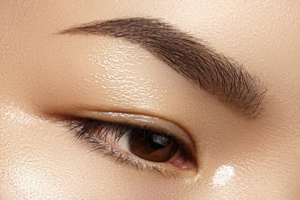
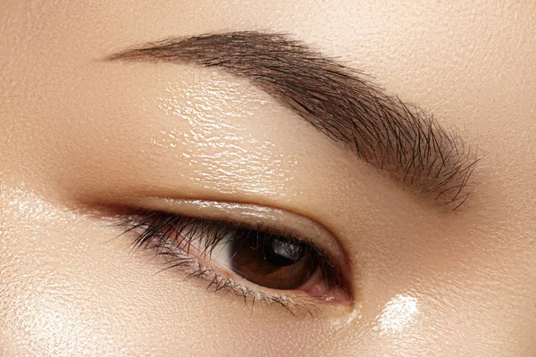
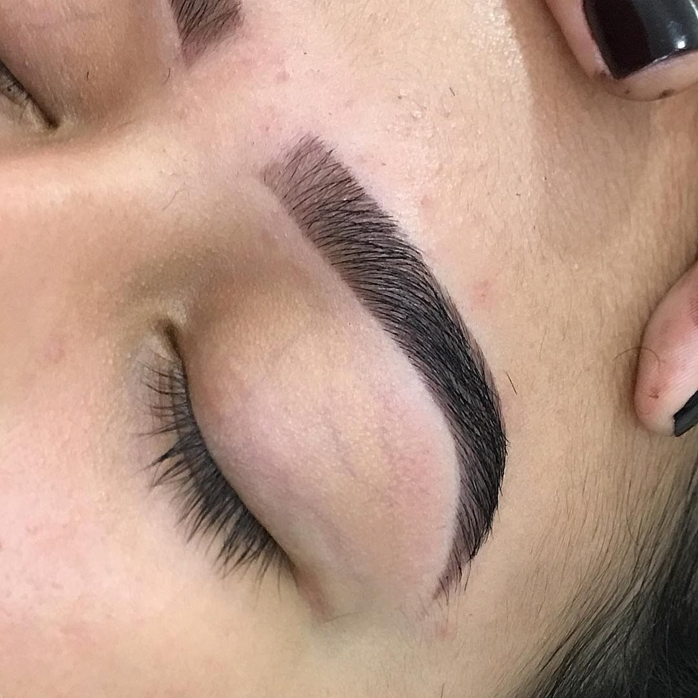
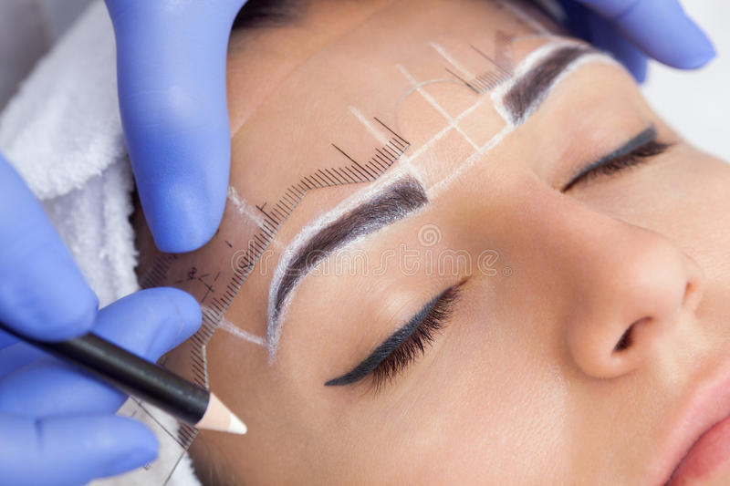
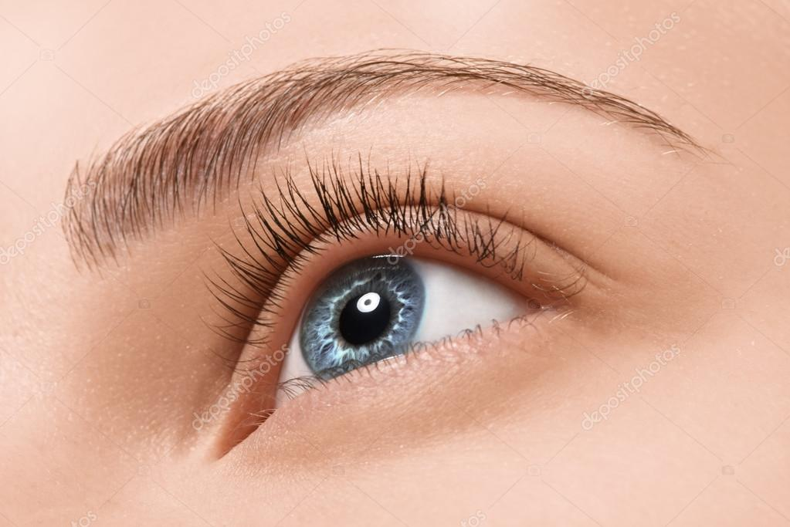
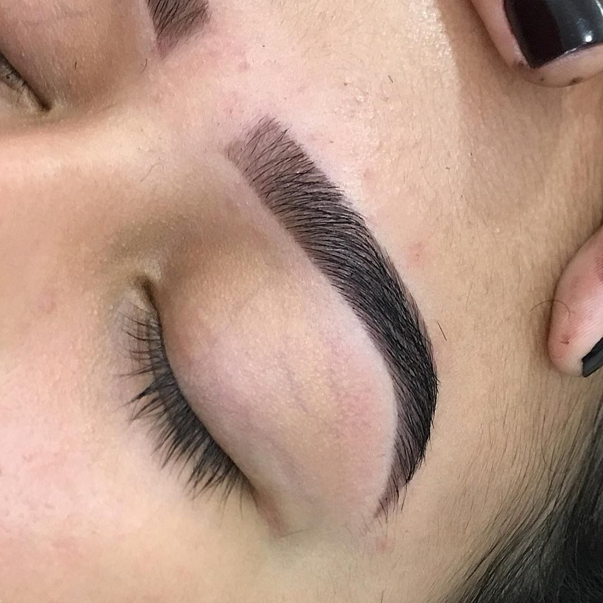
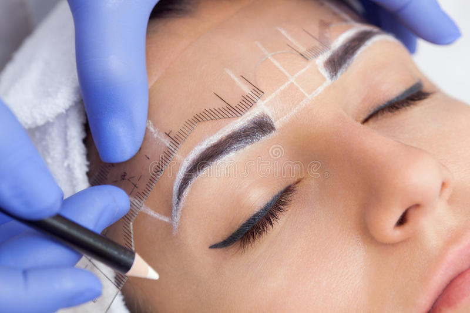
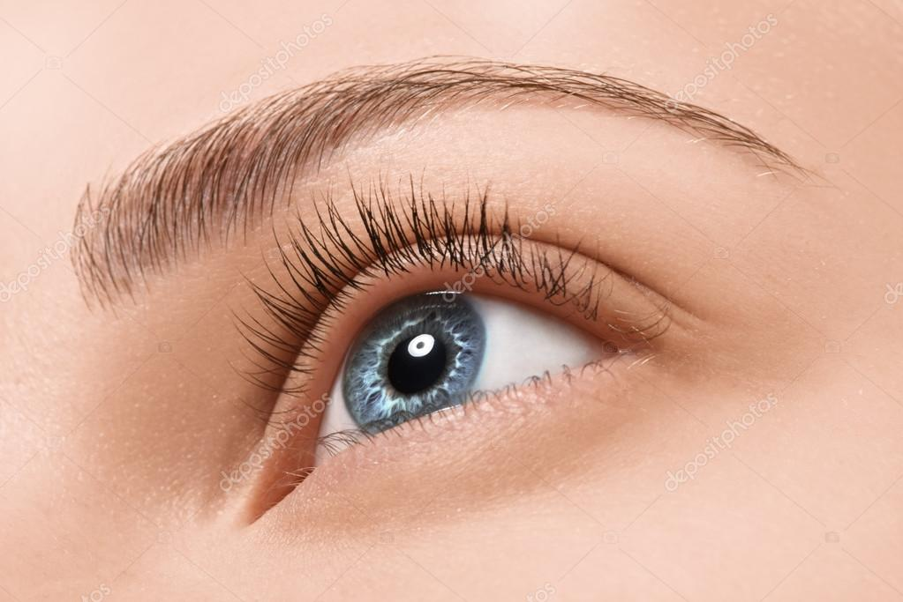

 






Com traços fortes e marcantes, as sobrancelhas arqueadas possuem curvaturas bem definidas que ajudam a valorizar o olhar.
Sem nenhuma curvatura, as sobrancelhas retas geralmente são mais curtas e grossas do que os outros modelos.
Apresentam o formato oposto do modelo reto com uma curvatura arredondada que vai do início ao fim das sobrancelhas.
"Fiquei encantada com o serviço de design de sobrancelhas do salão. A profissional foi extremamente cuidadosa e habilidosa, deixando minhas sobrancelhas perfeitamente delineadas e em harmonia com o meu rosto. Recomendo a todas!"
"O salão possui um serviço de sobrancelhas excepcional! A especialista em sobrancelhas foi muito atenciosa e entendeu exatamente o que eu queria. Ela fez um trabalho minucioso, deixando minhas sobrancelhas definidas e naturais. Amei o resultado!"
"Superou minhas expectativas! Fui ao salão para fazer o design e tintura de sobrancelhas, e o resultado foi incrível. A profissional foi muito cuidadosa e habilidosa, e o resultado ficou perfeito. Agora tenho sobrancelhas definidas e cheias, exatamente como eu queria. Recomendo de olhos fechados!"